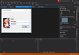
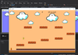

This project was inspired on a great and classic game called "Super Mario Bros". A game which became a classic through the passing years.
In the first step we can see the login screen being created, if the password and username dosen't match with the database, the login screen will not grant you access to the game itself.
This is the first level of the game, what we can see it has a simple level design, with three platforms which the player can have contact, and two "deadly" platforms in which cause's the player to re-allocate to the initial position and losing the current progress.
Here we can see the second level of the game, in which consists of eight platforms in which the player must jump throught, and only one, but bigger "deadly" platform on the whole level, which cover's almost all of the base of the same level.
